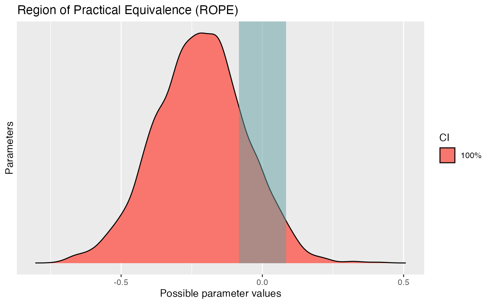
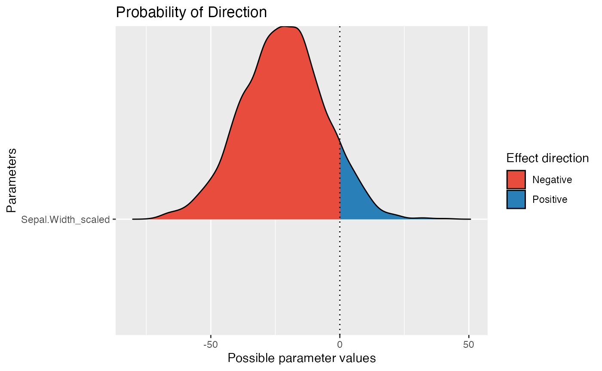
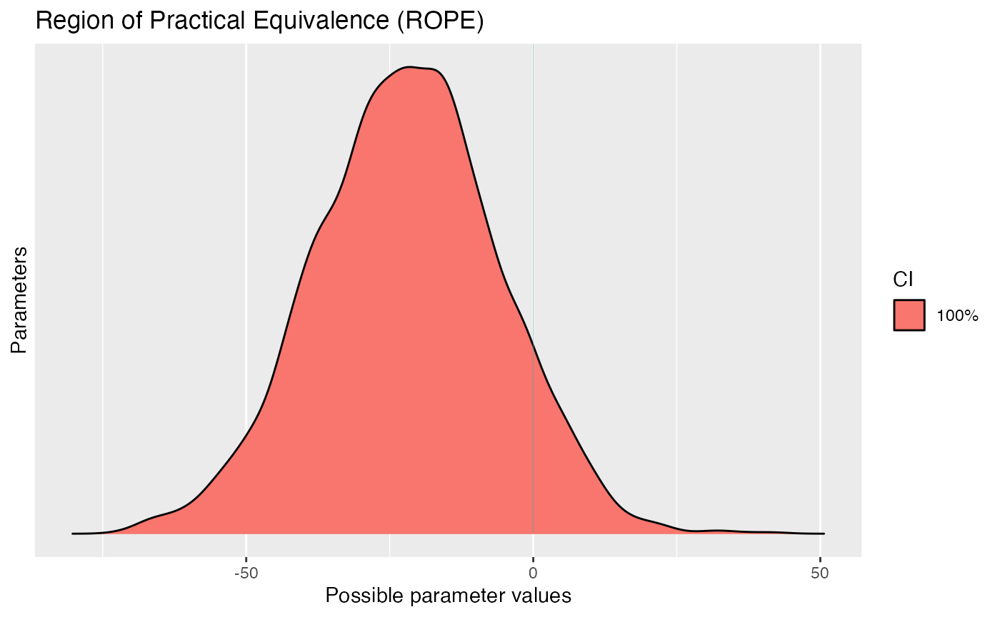

Region of Practical Equivalence (ROPE)
Source:vignettes/region_of_practical_equivalence.Rmd
region_of_practical_equivalence.RmdThis vignette can be referred to by citing the package:
- Makowski, D., Ben-Shachar, M. S., & Lüdecke, D. (2019). bayestestR: Describing Effects and their Uncertainty, Existence and Significance within the Bayesian Framework. Journal of Open Source Software, 4(40), 1541. https://doi.org/10.21105/joss.01541
What is the ROPE?
Unlike a frequentist approach, Bayesian inference is not based on statistical significance, where effects are tested against “zero”. Indeed, the Bayesian framework offers a probabilistic view of the parameters, allowing assessment of the uncertainty related to them. Thus, rather than concluding that an effect is present when it simply differs from zero, we would conclude that the probability of being outside a specific range that can be considered as “practically no effect” (i.e., a negligible magnitude) is sufficient. This range is called the region of practical equivalence (ROPE).
Indeed, statistically, the probability of a posterior distribution being different from 0 does not make much sense (the probability of it being different from a single point being infinite). Therefore, the idea underlining ROPE is to let the user define an area around the null value enclosing values that are equivalent to the null value for practical purposes (Kruschke, 2014, 2010; Kruschke, Aguinis, & Joo, 2012).
Equivalence Test
The ROPE, being a region corresponding to a “null” hypothesis, is used for the equivalence test, to test whether a parameter is significant (in the sense of important enough to be cared about). This test is usually based on the “HDI+ROPE decision rule” (Kruschke, 2014; Kruschke & Liddell, 2018) to check whether parameter values should be accepted or rejected against an explicitly formulated “null hypothesis” (i.e., a ROPE). In other words, it checks the percentage of Credible Interval (CI) that is the null region (the ROPE). If this percentage is sufficiently low, the null hypothesis is rejected. If this percentage is sufficiently high, the null hypothesis is accepted.
Credible interval in ROPE vs full posterior in ROPE
Using the ROPE and the HDI as Credible Interval, Kruschke (2018) suggests using the percentage of the 95% HDI that falls within the ROPE as a decision rule. However, as the 89% HDI is considered a better choice (Kruschke, 2014; McElreath, 2014, 2018), bayestestR provides by default the percentage of the 89% HDI that falls within the ROPE.
However, simulation studies data suggest that using the percentage of the full posterior distribution, instead of a CI, might be more sensitive (especially do delineate highly significant effects). Thus, we recommend that the user considers using the full ROPE percentage (by setting ci = 1), which will return the portion of the entire posterior distribution in the ROPE.
What percentage in ROPE to accept or to reject?
If the HDI is completely outside the ROPE, the “null hypothesis” for this parameter is “rejected”. If the ROPE completely covers the HDI, i.e., all most credible values of a parameter are inside the region of practical equivalence, the null hypothesis is accepted. Else, it’s unclear whether the null hypothesis should be accepted or rejected.
If the full ROPE is used (i.e., 100% of the HDI), then the null hypothesis is rejected or accepted if the percentage of the posterior within the ROPE is smaller than to 2.5% or greater than 97.5%. Desirable results are low proportions inside the ROPE (the closer to zero the better).
How to define the ROPE range?
Kruschke (2018) suggests that the ROPE could be set, by default, to a range from -0.1 to 0.1 of a standardized parameter (negligible effect size according to Cohen, 1988).
- For linear models (lm), this can be generalised to: \[[-0.1*SD_{y}, 0.1*SD_{y}]\].
- For logistic models, the parameters expressed in log odds ratio can be converted to standardized difference through the formula: \[\pi/\sqrt{3}\] (see the effectsize package, resulting in a range of
-0.18to-0.18. For other models with binary outcome, it is strongly recommended to manually specify the rope argument. Currently, the same default is applied that for logistic models. - For t-tests, the standard deviation of the response is used, similarly to linear models (see above).
- For correlations,
-0.05, 0.05is used, i.e., half the value of a negligible correlation as suggested by Cohen’s (1988) rules of thumb. - For all other models,
-0.1, 0.1is used to determine the ROPE limits, but it is strongly advised to specify it manually.
Sensitivity to parameter’s scale
It is important to consider the unit (i.e., the scale) of the predictors when using an index based on the ROPE, as the correct interpretation of the ROPE as representing a region of practical equivalence to zero is dependent on the scale of the predictors. Indeed, unlike other indices (such as the pd), the percentage in ROPE depend on the unit of its parameter. In other words, as the ROPE represents a fixed portion of the response’s scale, its proximity with a coefficient depends on the scale of the coefficient itself.
For instance, if we consider a simple regression growth ~ time, modelling the development of Wookies babies, a negligible change (the ROPE) is less than 54 cm. If our time variable is expressed in days, we will find that the coefficient (representing the growth by day) is of about 10 cm (the median of the posterior of the coefficient is 10). Which we would consider as negligible. However, if we decide to express the time variable in years, the coefficient will be scaled by this transformation (as it will now represent the growth by year). The coefficient will now be around 3550 cm (10 * 355), which we would now consider as significant.
library(rstanarm)
library(bayestestR)
library(see)
data <- iris # Use the iris data
model <- stan_glm(Sepal.Length ~ Sepal.Width, data=data) # Fit model
# Compute indices
pd <- p_direction(model)
percentage_in_rope <- rope(model, ci=1)
# Visualise the pd
plot(pd)
pd> # Probability of Direction (pd)
>
> Parameter | pd
> ---------------------
> (Intercept) | 100.00%
> Sepal.Width | 91.65%
# Visualise the percentage in ROPE
plot(percentage_in_rope)
percentage_in_rope> # Proportion of samples inside the ROPE [-0.08, 0.08]:
>
> Parameter | inside ROPE
> -------------------------
> (Intercept) | 0.00 %
> Sepal.Width | 16.28 %We can see that the pd and the percentage in ROPE of the linear relationship between Sepal.Length and Sepal.Width are respectively of about 92.95% and 15.95%, corresponding to an uncertain and not significant effect. What happen if we scale our predictor?
data$Sepal.Width_scaled <- data$Sepal.Width / 100 # Divide predictor by 100
model <- stan_glm(Sepal.Length ~ Sepal.Width_scaled, data=data) # Fit model
# Compute indices
pd <- p_direction(model)
percentage_in_rope <- rope(model, ci=1)
# Visualise the pd
plot(pd)
pd> # Probability of Direction (pd)
>
> Parameter | pd
> ----------------------------
> (Intercept) | 100.00%
> Sepal.Width_scaled | 91.65%
# Visualise the percentage in ROPE
plot(percentage_in_rope)
percentage_in_rope> # Proportion of samples inside the ROPE [-0.08, 0.08]:
>
> Parameter | inside ROPE
> --------------------------------
> (Intercept) | 0.00 %
> Sepal.Width_scaled | 0.10 %As you can see, by simply dividing the predictor by 100, we drastically changed the conclusion related to the percentage in ROPE (which became very close to 0): the effect could now be interpreted as being significant. Thus, we recommend paying close attention to the unit of the predictors when selecting the ROPE range (e.g., what coefficient would correspond to a small effect?), and when reporting or reading ROPE results.
Multicollinearity: Non-independent covariates
When parameters show strong correlations, i.e., when covariates are not independent, the joint parameter distributions may shift towards or away from the ROPE. Collinearity invalidates ROPE and hypothesis testing based on univariate marginals, as the probabilities are conditional on independence. Most problematic are parameters that only have partial overlap with the ROPE region. In case of collinearity, the (joint) distributions of these parameters may either get an increased or decreased ROPE, which means that inferences based on ROPE are inappropriate (Kruschke, 2014).
The equivalence_test() and rope() functions perform a simple check for pairwise correlations between parameters, but as there can be collinearity between more than two variables, a first step to check the assumptions of this hypothesis testing is to look at different pair plots. An even more sophisticated check is the projection predictive variable selection (Piironen & Vehtari, 2017).
Kruschke, J. (2014). Doing bayesian data analysis: A tutorial with r, jags, and stan. Academic Press.
Kruschke, J. K. (2010). What to believe: Bayesian methods for data analysis. Trends in Cognitive Sciences, 14(7), 293–300.
Kruschke, J. K., Aguinis, H., & Joo, H. (2012). The time has come: Bayesian methods for data analysis in the organizational sciences. Organizational Research Methods, 15(4), 722–752.
Kruschke, J. K., & Liddell, T. M. (2018). The bayesian new statistics: Hypothesis testing, estimation, meta-analysis, and power analysis from a bayesian perspective. Psychonomic Bulletin & Review, 25(1), 178–206.
McElreath, R. (2014). Rethinking: Statistical rethinking book package. R package version 1.391.
McElreath, R. (2018). Statistical rethinking: A bayesian course with examples in r and stan. Chapman; Hall/CRC.
Piironen, J., & Vehtari, A. (2017). Comparison of bayesian predictive methods for model selection. Statistics and Computing, 27(3), 711–735.